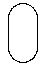
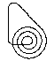

hump

loop-the-loop

circle
Lemniscate
oval
spiral
If you had first-year physics in college, you probably solved lots of problems with a ball rolling down a flat inclined plane. Did you ever wonder how to solve for the motion with a curved surface instead? Of course the same principles apply, but the forces are changing as the slope changes. So the math gets a bit more interesting!
You can change the track shape by clicking a button below. You can drag the ball with your mouse to change the starting position. Try modifying gravity or damping.
The "custom" track choice displays a track created from the JavaScript expressions in the X-equation and Y-equation text areas, using the variable "t". The track will be created between the specified start and finish t values.
The math behind the simulation is shown below. Also available are: open source code, documentation and a simple-compiled version which is more customizable.
|
hump |
loop-the-loop |
circle |
Lemniscate |
 oval |
 spiral |
If you select the "custom" track then you can change the shape of the roller coaster by parametric equations for X and Y as JavaScript expressions involving t . The shape is determined by those equations where the value of t goes between the start and finish t values that are specified.
For example, you can make a circle by specifying:
X-equation: Math.cos(t) Y-equation: Math.sin(t) start-t: 1.57 (this is pi/2) finish-t: 7.85 (this is 5*pi/2)
Assuming the increment between values of t is 0.01, the points on the shape are found by a process like this:
x = Math.cos(1.57), y = Math.sin(1.57) x = Math.cos(1.58), y = Math.sin(1.58) ... x = Math.cos(7.84), y = Math.sin(7.84) x = Math.cos(7.85), y = Math.sin(7.85)
Here is another equation to try:
X-equation: t Y-equation: t*Math.cos(3*t) start-t: -8 finish-t: 8
You can use the JavaScript ?: ternary operator to provide two equations
over different ranges.
X-equation: t Y-equation: t > 0 ? t : -t start-t: -3 finish-t: 3
How can we decide whether this simulation is correct? We know that the ball should not spontaneously gain energy, nor mysteriously lose energy. So we can look for situations that may violate this constraint.
Try dragging the ball to a certain height on a curve, and letting go. If damping (friction) is set to 0 , the ball should reach the same height on the track again and again. It shouldn't gain or lose height at the moment that it reverses direction. At that moment the velocity is zero, and all the energy is gravitational (potential) energy.
Here is a more sensitive test: Click on the circle track. With damping set to 0 , move the ball to the apex of the circle and let the ball go. When you release the ball it has zero velocity, and only potential (gravitational) energy. The ball will fall to one side and then roll back up the other side to almost where you released it from. It should then reverse direction and fall the other way.
If instead the ball crosses over the top of the circle, you know that it has gained some energy because it will have non-zero velocity at the top of the circle. This shows the simulation is imperfect.
To observe the energy directly, click the "show energy" checkbox. The energy shown is the sum of the kinetic and gravitational energy.
kinetic energy = 1⁄2 m v2
gravitational energy = m g y
where m = mass, v = velocity, g = gravity constant, and y = vertical position. With damping off, total energy should remain constant. Instead, you will see the energy fluctuating quite a bit. This is due to some shortcuts used in the simulation programming. For example, we use a table to represent the curve (see below) and the slope at a given point is approximated somewhat crudely.
You can see that a simulation like this involves tradeoffs between correctness, display speed, and programming effort.
A ball moves along a curved track. We assume that the ball cannot leave the track, but is free to move along its length. We have two variables
We pick some point on the track to be position p = 0 and pick a direction along the track to be positive. Then the position is equal to the length of the track, from the origin to that point.
The gravity force on the ball is shown in the diagram as m g pointing downwards. The component of this force that is parallel to the track is what causes the ball to accelerate. The steeper the track, the faster the acceleration.
Let k be the slope of the track at this point. Let θ be the angle between the gravity vector and the slope vector (the slope vector points in the direction where p increases). Then we can write the force equation for gravity as
| F = m a = m g cos θ | (1) |
where m = mass, a = acceleration, and g = the gravitational constant. If we add a damping force that is proportional to the velocity we get
| F = m a = m g cos θ − b v | (2) |
where b is a constant determining the amount of damping. We can find cos θ by using the formula for the angle between two vectors A, B
| cos θ = | A · B |
| |A| |B| |
where the numerator is the dot product, and the denominator is the product of the lengths. Note that we indicate vectors with bold letters here. Define our two vectors by
This leads to
| cos θ = | −k m g | = | −k |
| m g √(1 + k2) | √(1 + k2) |
Now we can write equation (2) as
| (3) |
where we keep in mind that the slope k is really a function of position k(p) . That is, given the position, we need to find the slope at that point. This is the equation of motion for the roller coaster.
The two equations needed for the Runge-Kutta numerical solver are given by:
p' = v
| v' = | −g k(p) | − b⁄m v |
| √(1 + k(p)2) |
Here we indicate that the slope k is a function of position p by the notation k(p) .
There is a small additional complication in that the track can loop around. This requires us to determine whether the path is increasing (in the sense of increasing p ) to the left or to the right. This affects the direction of the slope vector and can change the sign of cos θ . This enters into the first term of equation (3) as a possible multiplication by −1 .
Finally, vertical lines need a special treatment, because the slope is infinite there. When we detect that the slope is vertical, equation (3) becomes:
a = −g − b⁄m v
To program this simulation on the computer we need to find the relationships between:
For the correctness of the simulation, the most important relationship is p → k because this is used in the differential equation, represented by the function k(p) . The other relationships can be less exact because they are only used to update the graphics or for user input. For example, the relation p → (x, y) is used to update the graphics. And the relation (x, y) → p is used for dragging the ball.
Suppose that the curve can be defined parametrically by two functions x(t), y(t) . That is, to sweep out the curve we increase the variable t from 0 to some value. And for each value of t we can find the position of the curve from the functions x(t), y(t) . For example, a circle can be defined parametrically by
x(t) = cos t
y(t) = sin t
where t varies from 0 to 2π . In two dimensions, the length of a curve can be determined by the path integral
$$p = \int \sqrt{\left( \frac{dx}{dt} \right)^2 + \left( \frac{dy}{dt} \right)^2} dt$$
where the limits of integration are the starting and ending value of t corresponding to the points you want to measure between.
We can try to solve the path integral analytically to get the needed relations. For some curves this is easily done. For the circle, the path integral is especially simple:
p = ∫ √ (sin2t + cos2t) dt = ∫ 1 dt = t
But for most curves the integral is too difficult to solve. For example, the "hump" curve in the simulation is defined by a simple polynomial
x(t) = t
y(t) = 3 − 7⁄6 t 2 + 1⁄6 t 4
But this leads to the following nasty integral which even a computer algebra program cannot solve.
$$p = \int \frac{1}{3} \sqrt{9 + 49 t^2 - 28 t^4 + 4 t^6} \; dt$$
Faced with difficult integrals, we instead take an approximate numerical approach and construct a table to represent the curve, as explained below.
Here is how we construct a table to represent the curve. Assume we have the functions x(t), y(t) which describe the curve parametrically. Suppose we want the curve to be defined from t = −3 to t = 3 . Then we start forming a table that would look something like this:
| T | P | X | Y |
|---|---|---|---|
| --3 | 0 | 1 | 2 |
| --2.99 | 0.014142 | 0.99 | 2.01 |
| --2.98 | 0.028284 | 0.98 | 2.02 |
| . . . | . . . | . . . | . . . |
Each row of the table represents a point on the curve. T is the the value that varies when defining the curve. P is the length of the path from the starting point. X and Y are the locations of each point.
The table is constructed by starting with t = −3 and setting p = 0 . We then find x, y from the equations x(−3), y(−3) . To add each row, we increase t by some small increment (here the increment is 0.01) and use the function that defines the curve to find the corresponding point x(t), y(t) .
We can then find p either by numerically evaluating the path integral (see measuring curve length above), or as a cruder and simpler method we can just increase p by the linear distance to the previous x, y point. The simulation here uses the simple method (a refinement would be to fit a polynomial to 3 or 4 neighboring points).
Once we have the table, we can implement a function that maps p → k , that is it maps the position along the path p to the slope k at that point. This can be done quickly by using a binary search algorithm, since the p values are all sorted. Suppose that p is closest to the i-th value in the table, so that P[i] < p < P[i+1] where P represents the list of p values in the table. Then an approximate value for the slope k is given by
| k = | Y[i+1] − Y[i] |
| X[i+1] − X[i] |
where X, Y are the tables of x, y values. Similar methods can be used for finding the relation p → (x, y) . For slightly better accuracy we can use a polynomial interpolation of the 4 points in the table that are nearest to the value of p we are seeking.
The routine that maps (x, y) → p is used less frequently and doesn't need to be as efficient. This simulation uses a linear search through the entire table to find the point in the table that minimizes the distance from the given (x, y) to the curve.
This web page was first published April 2002.